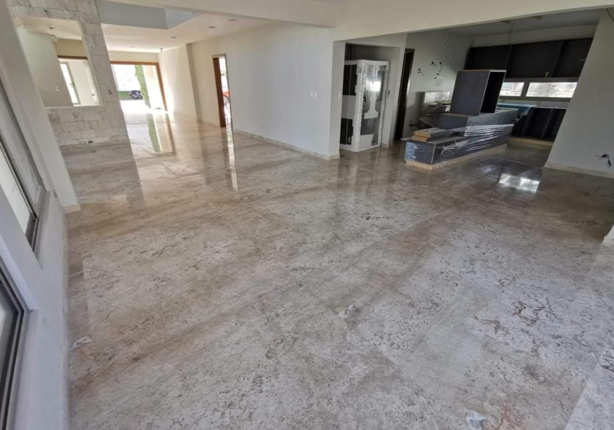
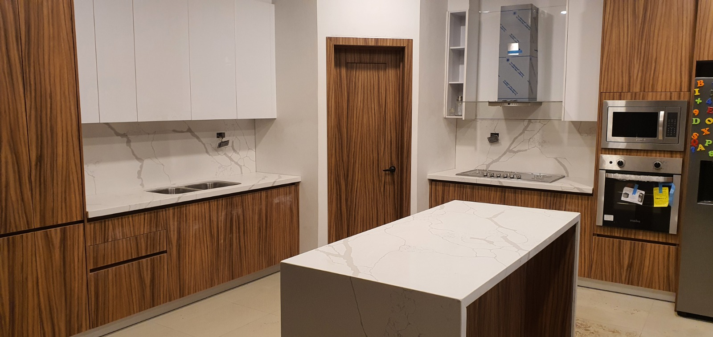
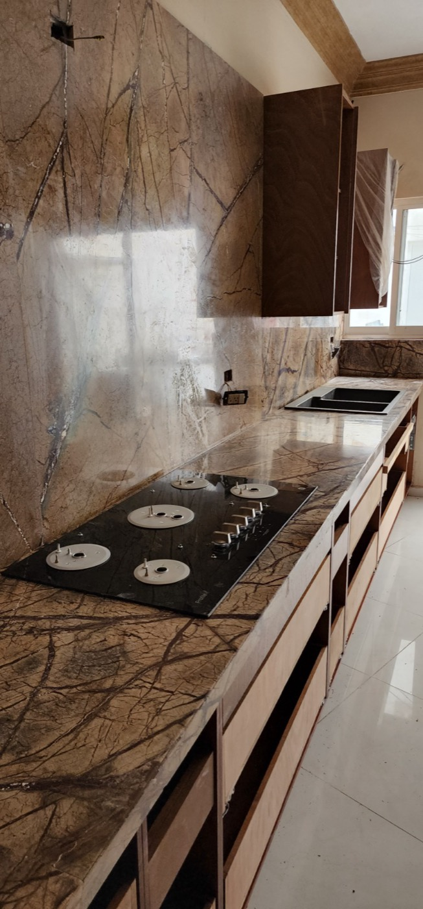
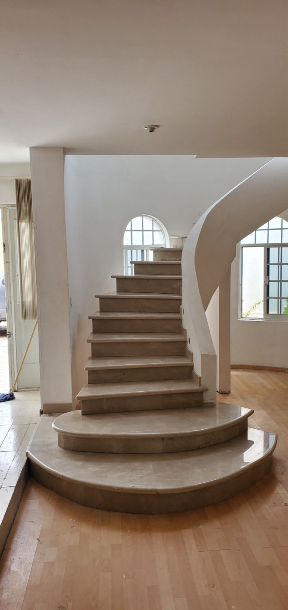

Pisos y muros
Continuidad visual en piedra natural
Revestimientos para salas, recibidores, fachadas interiores y muros protagonistas.

Mármol · Granito · Cantera · Cuarzo · Ónix · Travertino
Pietra Santa suministra e instala acabados de piedra de alta gama con precisión artesanal, asesoría honesta y ejecución profesional en Durango.
Filosofía
En Pietra Santa trabajamos con mármol, granito, cantera y piedras especiales para crear superficies duraderas, sobrias y precisas. Cada proyecto se cotiza a la medida porque cada espacio exige cortes, espesores, juntas, preparación y montaje distintos.
Nuestro servicio se centra en el suministro con instalación incluida: selección del material, medición, fabricación, colocación y cuidado final para que el acabado se vea integrado al diseño, no solamente aplicado sobre él.
Muestrario de aplicaciones
La cotización se calcula según material, medidas, preparación del área, transporte, cortes, cantos e instalación.

Revestimientos para salas, recibidores, fachadas interiores y muros protagonistas.

Superficies de granito, cuarzo o mármol con corte y montaje profesional.

Acabados sobrios para espacios húmedos con sellado y detalle en juntas.

Trabajo de piedra para memoriales, bases, placas y elementos conmemorativos.
Materiales principales
Proceso
Revisamos estilo, uso, resistencia esperada y materiales compatibles con el espacio.
Tomamos dimensiones, accesos, cortes especiales y condiciones de instalación.
Cortamos, pulimos, sellamos e instalamos cuidando juntas, niveles y remates.
Contacto y ubicación
Visítanos o envíanos las medidas aproximadas, fotografías del área y el material que tienes en mente. Te orientamos con una propuesta personalizada.